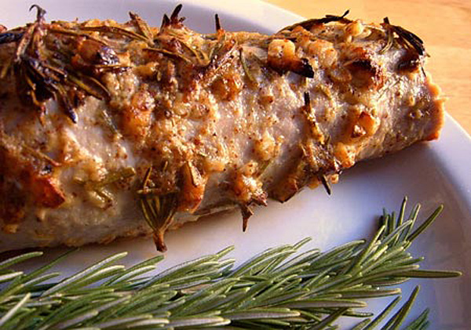

Solomillo de cerdo al horno, la receta fácil que buscas

Este solomillo de cerdo al horno es perfecta para un día especial, o cuando tenemos invitados en casa y queremos lucirnos sin muchas complicaciones, ya que está deliciosa y es muy fácil de preparar, en apenas 30 minutos tendremos preparada nuestra receta de solomillo.
La carne de solomillo de cerdo además es una carne tierna y jugosa que los niños pueden masticar sin dificultad, al contrario de lo que les ocurre con otras piezas.
Nuestro solomillo se prepara al horno con ajo y romero y, de verdad, está exquisito… ¡No dejéis de probarlo!
Receta de solomillo de cerdo al horno
Ingredientes para hacer solomillo al horno:
1 solomillos de cerdo grande o 2 medianos
2 1/2 cucharadas de aceite de oliva
2 1/2 de hojas de romero fresco picado
2 1/2 cucharadas de mostaza gruesa
5 dientes de ajo, picados
1/2 cdta. de sal
Un par de vueltas de pimienta negra recién molida
Cómo hacer solomillo de cerdo al horno con ajo y romero
Precalienta el horno a 225ºC. Forrar una bandeja para hornear con papel de aluminio y rociarla con aceite en aerosol antiadherente. Dejar a un lado.
Enjuagar el solomillo de cerdo con agua fría y recortar cualquier exceso de grasa o de la membrana de la carne. Secar y colocar en la bandeja del horno.
En un bol pequeño, mezclar el aceite de oliva, hojas de romero, la mostaza, el ajo, la sal y pimienta negra. Cuidadosamente frotar todo el solomillo de cerdo con la mezcla, sobre todo en la parte superior. Colocar en el horno caliente y asar hasta que la carne se encuentre dorada, aproximadamente unos 20 minutos para un solomillo pequeño y unos 25-30 minutos para uno grande. Cuando la carne esté hecha, retirar del horno y dejar reposar 5-10 minutos antes de cortar.
Solomillo de cerdo al horno con salsa de verduras
Ingredientes: 1 solomillo de cerdo; Bacon en tiras; Aceite de Oliva Virgen Extra; 1 cebolla; 1 ajo; 2 zanahorias; champiñones frescos en cuartos.
Receta: Forramos el solomillo de cerdo con bacon en tiras y lo introducimos atado al horno, con aceite, una cebolla en cuartos, un ajo, un par de zanahorias y champiñones. Se va regando con su propio caldo y vino blanco. A mitad de la cocción, unos 10-15 minutos, se le da la vuelta y se deja otros 10 minutos. Cuando está hecho se le quita la cuerda, se corta en medallones, y la salsa con las verduras se tritura para acompañar.
Solomillo a la sal en horno
Ingredientes:romero fresco, laurel, sal gorda, solomillo de cerdo
Receta:Este solomillo al horno es muy fácil y parecido a nuestra primera receta. En este caso la ventaja es que la sal lo mantiene realmente jugoso. Para hacerlo le atamos diferentes hierbas aromáticas, como romero fresco y laurel. Lo ponemos en una bandeja, lo cubrimos bien con sal gorda, la humedecemos ligeramente para que forme una costra y lo metemos al horno. Dejamos que se haga al horno durante aproximadamente 20 minutos. Luego rompemos la costra de sal, limpiamos bien el solomillo y cortamos en medallones que podemos servir con compota de manzana o algún paté o salsa de champiñones por ejemplo.